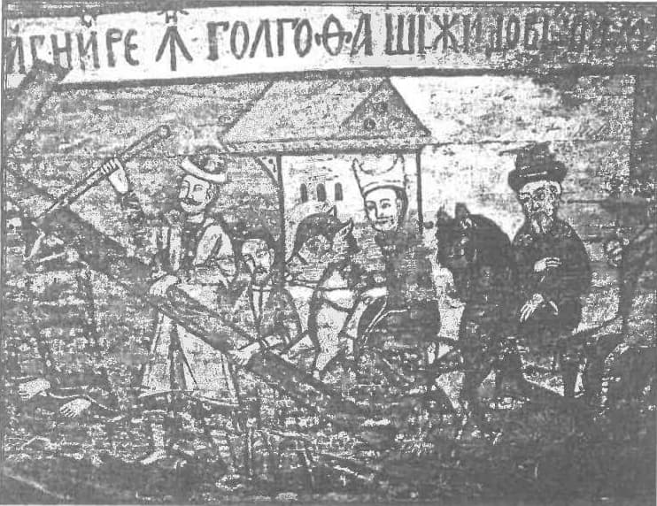

Publicăm de pe site-ul orthodoxia.gr planul textului care va fi semnat în Cipru de către Comisia Mixtă de Dialog dintre ortodocși și romano-catolici.
Expunem în exclusivitate planul dezbaterilor care se desfășoară în Pafos spre informarea cititorilor în traducerea membrilor Uniunii Filo-Ortodoxe „Kosmas Flamiatos”, plan pe care am reușit să-l sustragem de la participanți.
Planul textului oficial care va fi semnat în cadrul întrunirii comisiei mixte pentru dialogul dintre ortodocși și catolici în Cipru
Rolul episcopului Romei în comuniunea Bisericii din primul mileniu
Introducere
1. În textul de la Ravenna „Consecințe eclesiologice și canonice ale naturii sacramentale a Bisericii. Comuniune eclesială, sinodalitate și autoritate”, catolicii și ortodocșii au recunoscut legătura neîntreruptă dintre sinodalitate și primat la toate nivelurile vieții Bisericii. „Primatul și sinodalitatea sunt interdependente reciproc. De aceea la toate nivelurile vieții Bisericii — local, regional și universal — primatul trebuie întotdeauna privit în contextul sinodalității, iar sinodalitatea în contextul primatului (Ravenna, § 43). De asemenea, sunt de acord că „în vremea Bisericii nedespărțite această ordine canonică (taxis) era recunoscută de toți. Mai sunt de acord că Roma, Biserica care „prezidează în iubire”, potrivit expresiei Sfântului Ignatie al Antiohiei (Către Romani, prolog), ocupă primul loc în această taxis și, prin urmare, episcopul Romei era protos‑ul între patriarhi” (Ravenna, § 40 și 41). Textul se referă la rolul activ și la privilegiile episcopului Romei ca „întâiul între patriarhi”, „primul în Scaun peste episcopii mari?” (Ravenna, § 41, 42, 44) și conchide că „rolul episcopului Romei în comuniunea tuturor Bisericilor” trebuie „să fie studiat într-o mai mare profunzime”. Care anume e funcția specifică a episcopului „primului scaun” în ecleziologia de comuniune (koinonia)? (Ravenna, § 45).
2. Tema pasului următor al dialogului este așadar „Rolul episcopului Romei în comuniunea Bisericii din primul mileniu”. Scopul este înțelegerea mai profundă a rolului episcopului Romei pe durata acestei perioade, atunci când Bisericile Apusului și Răsăritului se aflau în comuniune, în pofida unor abateri dintre ele și astfel să răspundem la întrebarea de mai sus.
3. Textul prezent va evalua tema considerând următoarele patru puncte:
- Biserica Romei. Primul Scaun. Prema cedus [ilizibil].
- Episcopul Romei ca succesor al lui Petru.
- Rolul episcopului Romei în vremuri de criză în comuniunea eclezială.
- Marea influență a factorilor neteologici. Biserica Romei. Primul Scaun.
4. Catolicii și ortodocșii sunt de acord că din vremurile apostolice, Biserica Romei a fost recunoscută ca prima între Bisericile locale și în Răsărit și Apus. Scrierile Părinților Apostolici mărturisesc clar despre acest fapt. Roma, capitala imperiului, a câștigat repede în Biserica primară faima de loc al muceniciei Sfinților Petru și Pavel. A câștigat un loc unic între Bisericile locale și a exercitat o influență unică. Mai târziu, în decursul secolului I, invocând exemplul martirilor Petru și Pavel, Biserica Romei a scris o lungă Epistolă către Biserica din Corint, care îi alungase pe preoții ei și sfătuia ca unitatea și înțelegerea să fie restabilite. Epistola a fost scrisă de către Clement, care în consecință este recunoscut drept episcop al Romei (a se vedea Irineu, „Contra ereziilor”, 3, 3, 2), chiar dacă modul exact al conducerii în Roma acelei perioade nu este cu totul clar.
5. Mai târziu, în drumul său către mucenicia din Roma, Ignatie al Antiohiei a scris Bisericii Romei cu mare prețuire, ca unei vrednice de Dumnezeu, vrednice de cinste, vrednice să fie numită binecuvântată, vrednice de fericire, vrednice de curățire. Se referă la ea ca la o întâistătătoare în ținuturile romanilor și ca la o întâistătătoare în filantropie.
6. Irineu a accentuat că Biserica Romei este cu siguranță punctul de referință pentru învățătura apostolică. Cu această Biserică, întemeiată de Petru și de Pavel, trebuia să conglăsuiască fiecare Biserică („Contra ereziilor”, 3, 3, 2).
7. De-a lungul vremurilor Episcopul Romei a fost în diferite disensiuni cu alți episcopi. În legătură cu data Paștelui, Anicet al Romei și Policarp al Smirnei nu au reușit să se înțeleagă în anul 154 d.Hr., dar au păstrat comuniunea euharistică. Patruzeci de ani mai târziu, Victor al Romei a convocat sinoade pentru a rezolva disputa – un caz interesant de sinodalitate și, mai ales, de papi care încurajează sinoadele – și l-a anatematizat pe Policrat de Efes și pe episcopii din Asia, atunci când sinodul lor a refuzat să-și însușească linia romană. Victor a fost mustrat de către Irineu pentru această seriozitate [sic] și se pare că și-a retras decizia, și comuniunea a fost păstrată. La mijlocul secolului al III – lea, a izbucnit un mare conflict în legătură cu faptul dacă cei care au fost botezați de către eretici trebuie să fie rebotezați, atunci când erau primiți în Biserică. Invocând tradiția locală, Ciprian al Catarginei și episcopii din Africa de Nord, susținuți de sinoade, în jurul episcopului răsăritean Firmilian al Cezareei, susțineau că astfel de oameni ar trebui să fie rebotezați, în timp ce episcopul Ștefan al Romei, referindu-se la tradiția romană și desigur la Petru și la Pavel (Epistola către Ciprian 75, 6, 2), spunea că nu este necesar. Comuniunea dintre Ștefan și Ciprian a avut serios de suferit, dar nu a fost întreruptă oficial. Într-un mod asemănător, primele secole arată că opiniile și hotărârile episcopilor Romei au fost uneori puse la îndoială de către co-episcopi. Arată de asemenea viața sinodală vie a primei Biserici. Multele sinoade africane din această vreme, de pildă, și corespondența frecventă a lui Ciprian cu Ștefan și în mod deosebit cu predecesorul său Corneliu, demonstrează un pronunțat duh colegial.
8. Toate Bisericile din Răsărit și din Apus credeau că Biserica Romei deținea primatul între Biserici. Primatul rezulta din diferiți factori: întemeierea acestei Biserici de către Petru și Pavel și simțirea prezenței lor vii, martiriul acestor doi corifei apostoli și localizarea mormintelor lor în Cetate, precum și faptul că Roma era capitala imperiului și centrul de comunicare.
9. Primele secole arată relația temeinică și neîntreruptă dintre primatul Scaunului Romei și primatul Episcopului ei. Fiecare episcop reprezintă, personifică și exprimă Scaunul său (a se vedea Ignatie al Antiohiei, Epistola către smirneni, 8, Epistola lui Ciprian, 66, 8). Într-adevăr, ar fi imposibil să se vorbească despre primatul Episcopului fără să ne referim la Scaunul său. În a doua jumătate a secolului al II – lea, se învăța că permanentizarea Predaniei Apostolice se întindea și se exprima prin succesiunea episcopilor în Scaunele întemeiate de către Apostoli. Și Răsăritul și Apusul continuau să susțină în mod asemănător că primatul Scaunului anticipează primatul Episcopului lui și este cauza celui din urmă.
10. Ciprian credea că unitatea episcopatului și a Bisericii sunt simbolizate de persoana lui Petru, căruia i s-a dat primatul, și de Scaunul lui, și că toți episcopii împreună au această slujire (prerogativă). Astfel, Scaunul lui Petru se află în fiecare Scaun, dar în mod deosebit la Roma. Cei care veneau la Roma, veneau la Scaunul lui Petru, la Biserica primară, cauza (izvorul) unității episcopale.
11. Primatul Scaunului Romei era evidențiat prin diferite expresii: Scaunul lui Petru (cathedra Petri), Scaunul Apostolilor (Sedes Apostolica), primul Scaun (prema Sedes). Însă, cuvântul Sfântului Gelasius, „Întâiul Scaun nu este judecat de nimeni” (Epistola a IV-a, PL 58, 28 B, Epistola a XIII–a, PL 59, 64 A) - care a fost aplicat mai apoi în codicii bisericești [ilizibil] și a devenit discutabil între Răsărit și Apus - inițial însemna doar că papa nu putea să fie judecat de către împărat.
12. Tradițiile răsăritene și apusene recunosc un oarecare respect față de primul dintre Scaunele patriarhale, care (respect) nu era pur onorific (Sinodul de la Niceea, canonul 6, Sinodul de la Constantinopol, canonul 3 și Sinodul de la Calcedon, canonul 28). Impunea autoritate (Ravenna, § 14), care întru totul se manifesta fără absolutism, fără constrângere fizică sau psihologică. (Ravenna, § 14). Doar că în primul mileniu Sinoadele Ecumenice erau convocate de către împărat, niciun sinod nu era recunoscut drept ecumenic fără să aibă consimțământul papei, care era dat fie anterior, fie posterior. Acest lucru poate să pară drept aplicarea la nivelul universal al vieții Bisericii a principiului exprimat de Canonul 34 Apostolic: „Episcopii fiecărui neam (ethnos) trebuie să‑l cunoască pe primul (protos) dintre ei și să‑l socotească drept cap (kephale) și să nu facă nimic fără avizul (gnome) lui, și fiecare să facă numai câte privesc parohia [eparhia] lui și satele de sub ea. Dar nici acela să nu facă ceva fără avizul (gnome) tuturor. Fiindcă așa va fi o armonie (homonoia) și va fi slăvit Dumnezeu prin Domnul în Duhul Sfânt: Tatăl și Fiul și Sfântul Duh” (a se vedea Ravenna, § 24). La toate nivelurile vieții bisericești, primatul și sinodalitatea sunt interdependente.
13. Împăratul Iustinian (527-565) a definit ierarhia celor cinci Scaune mari: Roma, Constantinopol, Alexandria, Antiohia și Ierusalim prin decret imperial (Νεαραί, 131, 2. 109, 123, 3), instituind astfel ceea ce este cunoscut ca Pentarhie. Episcopul Romei se distingea ca primul în ordine, fără a se menționa desigur tradiția petrină.
14. Sub papa Grigorie I (590-604) s-a continuat conflictul care începuse sub papa Gelasius (579-590), pentru titlul de „Patriarh Ecumenic” pentru patriarhul Constantinopolului. Pentru izbucnirea conflictului au slujit drept pretext diferitele percepții în Răsărit și Apus. Grigorie vedea în acest titlu o aroganță intolerabilă și încălcarea drepturilor canonice ale celorlalte Scaune în Răsărit, în vreme ce în Răsărit titlul era perceput drept expresie a unor drepturi mai mari ale patriarhatului. Mai târziu, Roma a acceptat titlul. Grigorie a spus că personal a refuzat titlul de „Papă universal”, în schimb se simte pur și simplu onorat atunci când fiecare episcop este onorat după datorie (Cinstea mea este cinstea fraților mei). S-a numit pe sine drept „slujitorul slujitorilor lui Dumnezeu”.
15. Încoronarea de la Charlemagne în anul 800 de către papa Leon al III–lea a marcat începutul unei noi epoci în istoria pretențiilor papale. În plus, un factor care a dus la divergențe între Răsărit și Apus a fost descoperirea Pseudo-Decretalelor [ilizibil] (850), care urmăreau întărirea autorității romane pentru protejarea episcopilor. Decretalele au jucat un rol uriaș în secolele următoare, deoarece papii au început să acționeze în spiritul Decretalelor, care proclamau de pildă că toate chestiunile importante, în principal depunerile din scaun ale episcopilor și mitropoliților erau în suprema răspundere a episcopului Romei, și că toate sinoadele primeau legiuita autoritate prin a fi aprobate de către Scaunul Roman. Patriarhii de Constantinopol nu au acceptat o astfel de opinie care era contrară principiului sinodalității. Chiar dacă Decretalele în realitate nu se refereau la Răsărit, într-un stadiu ulterior, în al doilea mileniu, au fost aplicate în Răsărit de pretențiile apusene. În ciuda tensiunilor tot mai numeroase în anul 1000, creștinii, și în Apus și în Răsărit, aveau încă percepția că aparțineau Biserici celei una și nedespărțite.

Episcopul Romei ca succesor al lui Petru.
16. Apariția inițială a legăturii dintre Scaunul Romei și Apostolii Petru și Pavel, s-a dezvoltat treptat în Apus ca o legătură mult mai bine conturată între episcopul Romei și Apostolul Petru. Papa Ștefan (la jumătatea secolului al III–lea) a fost primul care a aplicat cuvântul „Tu ești Petru și pe această piatră voi zidi biserica Mea” (Matei 16:18) la slujirea sa. Sinodul de la Constantinopol din 381 a precizat că Constantinopolul se cuvine să aibă poziția a doua după Roma: „Pentru că este Noua Romă, Episcopul Constantinopolului va primi prerogativele de onoare după Episcopul Romei” (Canonul 3). Criteriul pe care l-a invocat Sinodul pentru ordinea Scaunelor era astfel nu instituirea apostolică, ci locul cetății în organizarea administrativă a Imperiului Roman. Un criteriu diferit pentru ordinea Scaunelor mari a fost folosit de Sinodul întrunit la Roma în 382 sub președinția papei Damasios. Aici s-au menționat trei Scaune principale: Roma, Alexandria și Antiohia și nu s-a spus nimic despre Constantinopol. S-a precizat că Biserica Romană a primit locul dintâi pentru cuvintele Domnului către Petru (Matei 16:18) și pentru întemeierea ei de către Petru și Pavel. Locul al doilea s-a cedat Alexandriei, Scaun întemeiat de Marcu, ucenicul lui Petru, iar al treilea Antiohiei, unde Petru a stat o perioadă înainte de a se duce la Roma. Această idee a celor trei Scaune patriarhale a fost reluată de către papii secolului V, ca de pildă de Bonifatie, Leon și Gelasius. După 381-382 și mai apoi au apărut două criterii precise pentru stabilirea ordinii ecleziale a unei Biserici, primul presupunând că ordinea eclezială trebuie să urmeze ordinii politice a Cetății respective, iar al doilea recurge la obârșia apostolică și mai exact la obârșia petrină.
17. Ideea petrină a fost dezvoltată în mod semnificativ de Leon (440-461). El a făcut o distincție netă între oficiul petrin în sine și persoana care exercită oficiul, pe care o considera drept nevrednic succesor al Sfântului Petru (Omilia III, 4). Fiind succesor, papa devine misionar și moștenește și ceea ce este comun unității indivizibile între Hristos și Petru (Omilia V, 4, 4, 2). Conform acesteia este de datoria sa să se îngrijească de toate Bisericile. Alegerea lui Petru se întemeiază pe faptul că Hristos i-a încredințat oile lui și numai lui (Ioan 21, 17, Omilia 83). Episcopul Romei garantează tradiția privilegiată a Bisericii Romei, tradiția Sfântului Petru (Omilia 96, 3). Leon s-a considerat pe sine drept paznic al credinței universale și al dispozițiilor apostolilor, este responsabil să impună respectarea și păzirea Sinoadelor.
18. La Sinodul al IV-lea Ecumenic (451), citirea Tomosului lui Leon a fost urmată de exclamația: „Petru a vorbit prin Leon”. Aceasta însă nu a fost decizia oficială a succesiunii petrine. Era o recunoaștere că Leon, Episcopul Romei, dăduse glas credinței lui Petru, care fusese îndeosebi în Biserica Romei. Conform aceluiași Sinod, Episcopii au spus că Leon a fost susținător înaintea tuturor al binecuvântatului Petru… răspândind binecuvântarea credinței lui tuturor. Augustin, la fel, s-a concentrat pe credință, mai mult decât pe persoana lui Petru, când a spus că Petru era icoana Bisericii și modelul Bisericii prin mărturisirea lui de credință către Hristos. Așadar, ar fi foarte ușor să se spună că Apusul înțelege prin piatra din Evanghelia după Matei (Matei 16:18) drept persoana lui Petru, în timp ce Răsăritul înțelege prin ea drept credința lui Petru. În Biserica primară, ambele, și Răsăritul și Apusul, erau succesiunea credinței lui Petru de o deosebită importanță.
19. Este important să se aibă în vedere că întreaga succesiune apostolică este succesiunea în credința apostolică în interiorul unei Biserici locale nedespărțite. Din perspectivă ecleziologică nu este posibil să se înțeleagă succesiune între persoane interdependente sau în afara credinței apostolice și a Bisericii locale. Astfel, spunând că Petru vorbește prin episcopul Romei înseamnă în primul rând că ultimul exprimă credința apostolică pe care Biserica a primit-o de la Apostolul Petru. Dincolo de toate acestea se ridică accepțiunea că episcopul Romei poate să fi înțeles drept succesorul lui Petru.
20. În Apus, accentul a fost pus pe legătura dintre Episcopul Romei și Apostolul Petru, în mod deosebit din secolul al IV–lea și în continuare, fiind secondat de o crescândă și din ce în ce mai precisă referință la rolul lui Petru în colegiul apostolilor. Primatul episcopului Romei între episcopi a fost interpretat gradual ca un privilegiu personal, deoarece era succesorul lui Petru, primul între apostoli. Locul episcopului Romei între episcopi era perceput în termenii locului lui Petru între apostoli. În Răsărit, această evoluție în interpretarea oficiului episcopului Romei nu a avut loc. O astfel de interpretare nu a fost niciodată respinsă răspicat în primul mileniu, dar Răsăritul a tins mai ales să considere pe fiecare episcop drept succesor al tuturor apostolilor, incluzându-l și pe Petru.
21. Cam în același mod, Apusul nu a respins ideea patriarhatului (a se vedea mai sus punctul 13) – Într-adevăr, a păstrat cu atenție ordinea celor cinci Scaune mari: Roma, Constantinopol, Alexandria, Antiohia și Ierusalim, în jurul cărora s-au dezvoltat cele cinci Patriarhii ale Bisericii Vechi (Ravenna, § 28). Totuși, Apusul nu a dat niciodată aceeași importanță Pentarhiei, ca modalitate de conducere a Bisericii cum a făcut Răsăritul.
22. Este demn de remarcat că aceste abordări diferite ale poziției episcopului și a relației dintre Scaunele mari în Apus și, respectiv, în Răsărit, întemeiate pe interpretări biblice, teologice și canonice cu totul diferite, au coexistat vreme de multe secole până la sfârșitul primului mileniu, fără a crea întreruperea comuniunii.
Rolul episcopului Romei în vremuri de criză în comuniunea eclezială.
23. În primul mileniu, Biserica a fost de multe ori încercată, atunci când comuniunea eclezială era amenințată, ca de pildă atunci când termenii diferiți de la Niceea au fost contestați prin condamnarea episcopilor ortodocși în câteva sinoade care s-au întrunit în veacul al IV–lea în Răsărit și atunci când formula hristologică de la Calcedon a fost contestată de către monofizitism, apoi Henotikon-ul (care a provocat schisma akakiană) în veacul al V-lea, și după aceea de către monergism și monotelism în secolul al VII–lea și de asemenea în vremea crizei iconoclaste din secolele VIII și IX. Catolici și ortodocși recunosc în mod asemănător importanța rolului pe care l-a jucat Episcopul Romei în aceste vremuri.
24. În realitate, din secolul al IV-lea și după aceea, a existat o recunoaștere crescândă a Romei ca centru către care recursurile pentru ajutor în diferite împrejurări puteau să se îndrepte din toată lumea creștină. În anii 339-340, Atanasie, episcopul Alexandriei, a făcut recurs la papa Iulius. Conform cuvintelor papei pe care le expune Atanasie, „acesta (Atanasie) a venit nu pentru consimțământul său, ci pentru că a fost chemat de către noi printr-o scrisoare” (Atanasie, „Apologie contra arienilor”, 29, 20, 33, 35). Tot așa apare Iulius, că nu doar a răspuns la recursul lui Atanasie, ci el însuși a luat inițiativa de a-l chema pe episcopul Alexandriei. Așadar, aici rolul papei pare să fie mai mare decât de simplu judecător.
25. Cererile pentru ajutor care ajungeau la Roma în momente de criză uneori erau însoțite de cereri asemănătoare către alte scaune bisericești mai mari. Ioan Gură de Aur (404), de pildă, a făcut recurs nu doar la Roma, ci și la episcopii de Milano și de Aquileea. Tot așa, activitatea pe care o exercita episcopul Romei urmărea să fie coordonată în spirit de reciprocitate cu activitatea altor scaune mai mari. Mai mult, inițiativele episcopului Romei tindeau în general să se ia în cadrul Sinodului Roman și de obicei se făcea trimitere la acest Sinod. Și din această perspectivă aveau un caracter împăciuitor și sinodal. De pildă, în corespondența din timpul conflictului cu Fotie, episcopii din Roma accentuau că luaseră hotărâri conform legilor și canoanelor și în mod sinodal.
26. Procedura cu privire la recursurile către Roma, după Sinodul de la Sardica. Acolo s-a spus că un episcop care fusese condamnat putea să facă recurs către papă, iar cel din urmă, dacă îl considera pertinent, putea să dispună rejudecarea, care se făcea de către episcopii mitropoliilor vecine cu episcopul condamnat. Dacă se cerea de către episcopul condamnat, papa ar fi putut să trimită un reprezentant [sic] pentru a ajuta pe episcopii mitropoliilor vecine. Chiar dacă inițial ar fi trebuit [sic] ca Sinodul de la Sardica să fie un sinod ecumenic, el a fost în realitate un sinod local care a avut loc în Apus. Canoanele lui au fost acceptate de către Sinodul Trulan (692).
27. Cea mai concisă descriere referitoare la acordurile necesare pentru ca un sinod să fie considerat ecumenic, a fost făcută de către Sinodul al VII–lea Ecumenic (Niceea II, 787), ultimul sinod care este recunoscut ca ecumenic și în Răsărit și în Apus:
- Trebuie să fie acceptat de către Întâistătătorii Bisericilor care trebuie să fie în deplin acord (conglăsuire) cu el.
- Papa Romei trebuie să fie colaborator sau cooperator cu sinodul.
- Patriarhii Răsăritului trebuie să fie de acord.
- Învățătura sinodului trebuie să fie în acord cu Sinoadele Ecumenice anterioare.
- Sinodul trebuie să primească un număr precis, așa încât să fie așezat în rândul Sinoadelor care sunt primite de către Biserica întreagă.
- Chiar dacă rolul papei primește aici o precizare exactă, există interpretări diferite ale termenilor acord (înțelegere, conglăsuire, συμφωνία), cooperator (συνεργός) și în același gând (συμφρωνούντες) [sic]. Acest subiect însă reclamă un studiu mai profund.
28. Se poate garanta că în cursul primului mileniu episcopul Romei, ca primul între patriarhi, exercita un rol de coordonare și stabilitate în chestiunile referitoare la credință și la comuniune, fidelitate față de tradiție și respect față de sinodalitate.
Influența factorilor neteologici
29. În timpul primului mileniu, un număr de factori care nu erau direct teologici, au jucat un rol important în relațiile dintre Bisericile Răsăritului și Apusului și au influențat înțelegerea și exercitarea primatului episcopului Romei. Acești factori erau de diferite tipuri. De pildă: politici, istorici, social-economici și culturali.
30. Ca niște dovezi ale factorilor respectivi pot să fie menționate următoarele:
- terminologia, cultura și ideologia Imperiului Roman;
- fluctuația politicii imperiale în raport cu Biserica;
- înclinația ei spre… (NOTĂ: TEXTUL NU ESTE COMPLET)
Redactor: D. Makris
Sursa: AKTINES – STÂLPUL ORTODOXIEI, orthodoxia.gr via http://thriskeftika.blogspot.com/2009/10/blog-post_4124.html
Comentarii